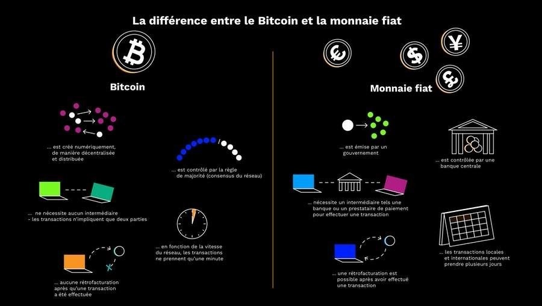
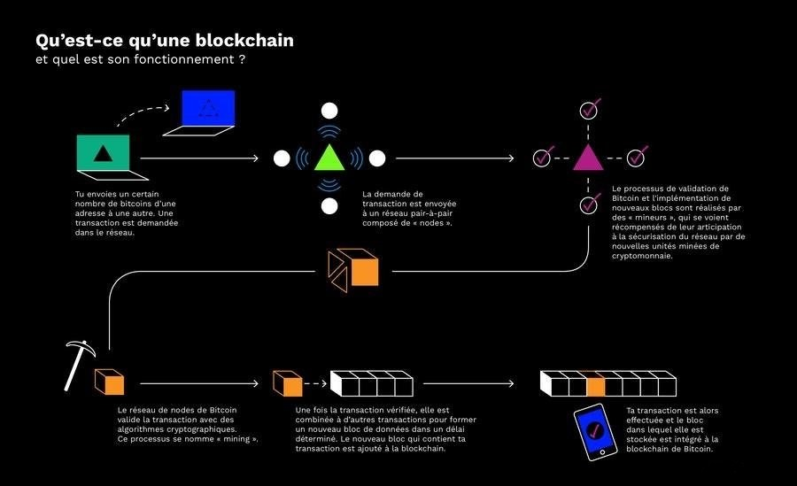
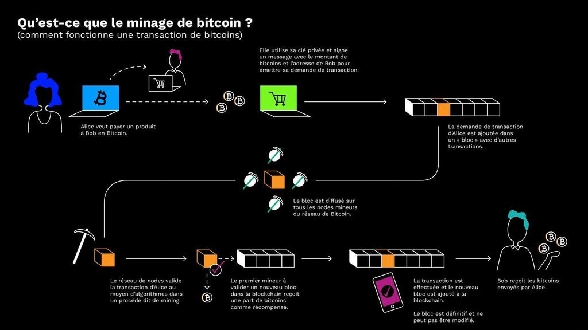
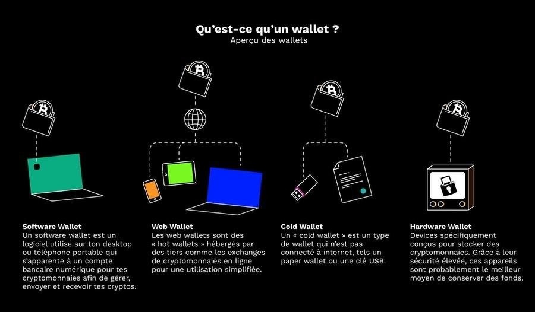

Fonctionnement, mode de création et de circulation du Bitcoin
Retour aux bases
Qu’est-ce qu’une cryptomonnaie ?
Une cryptomonnaie, appelée aussi cryptoactif, cryptodevise ou encore cybermonnaie, est une
monnaie numérique émise de
pair à pair (actif numérique), sans avoir recourt à une
banque centrale mais en utilisant un réseau informatique
décentralisé.
Son fonctionnement repose sur les principes même de la cryptographie pour
valiser des transactions et créer elle-même la
devise.
amf-france.fr
Qu’est-ce qu’une devise ?
Une devise est celle qui qualifie l’ unité monétaire d’un pays étranger et est émise, dans la majorité des cas, par une banque centrale qui en assure le contrôle. En complément, on parle de monnaie fiat lorsqu’une monnaie est décrétée par l’ Etat et que ce dernier en confie la gestion à une Banque centrale. Les monnaies fiat sont les monnaies principalement utilisées dans l’économie actuelle et les devises les plus échangées sont l’ euro, le dollar américain, la livre sterling ainsi que le yen japonais.
greenbull-campus.fr
On retrouve donc naturellement des similitudes et des différences entre une cryptomonnaie et une devise.
- Il est possible d’utiliser les deux pour effectuer des paiements ou les utiliser comme réserves de valeur.
- Les deux reposent sur la confiance généralisée des consommateurs pour servir comme moyen d’échange.
- La monnaie fiat est émise et controlée par les banques centrales et le Bitcoin est produit et distribué par un processus nommé « mining » mais n’est contrôlé par aucune banque centrale.
- Une transaction en Bitcoin ne peut pas être annulée ou inversée, contrairement aux transactions avec des devises.
- L’autorité centrale garantit la confiance et la sureté de la monnaie fiat alors que la confiance dans les cryptomonnaies est basée sur la technologie de la blockchain, que nous analyserons plus tard.
-
cryptonews.fr
- 
Ainsi, une cryptomonnaie permet d’effectuer des transactions directes entre individus, sans avoir recours à un intermédiaire, comme une banque.
L'essentiel en deux mots
En 2008, le japonais Satoshi Nakamoto met en ligne sur internet un article décrivant le fonctionnement d’un système d’échange numérique appuyé sur une nouvelle technologie, la blockchain. Sur ce système s’échange des actifs numériques appelés Bitcoins, et non des euros ou des dollars.
Qu’est-ce qu’un actif numérique ?
Un actif numérique est un bien immatériel de format binaire incluant un droit de propriété. Ces actifs sont composés principalement de documents numériques (logiciels) et contenus multimédias (images, graphiques, sons et vidéos) qui sont soit en circulation, soit stockés sur des supports numériques (ordinateurs, disques durs…). Un actif numérique a obligatoirement une valeur financière qui varie selon l’offre et la demande. De nombreux autres actifs numériques se développent dans le domaine de la médecine, du vote de l’éducation, ect. Ainsi, la blockchain est une nouvelle catégorie d’actifs numériques.
actifsnumeriques.fr
Si le Bitcoin constitue le cryptoactif le plus médiatisé et le plus valorisé, on recense tout de même plus de 1600 actifs de ce type en 2018 dans le monde comme le ripple, l’etherium…
bnpparibas.com
Comment crée-t-on ces actifs ?
Ces actifs sont créés et échangés par les ordinateurs connectés en réseau, grâce à des calculs mathématiques complexes, faisant appel à des techniques de cryptographie : c’est la raison pour laquelle on parle de cryptoactifs. La création de ces actifs a un nom : le minage.
A la différence des monnaies classiques, le Bitcoin n’est donc pas émis par une autorité bancaire,par exemple l’Autorité Bancaire Européenne (EBA) pour l’Union Européenne, mais sur le protocole blockchain du même nom.
Lors de sa création, le Bitcoin dispose d’un approvisionnement fixe et maximal de 21 millions d’unités, ce qui le rend encore plus rare que l’or. Contrairement à la monnaie fiat, le Bitcoin n’est pas soumis à l’inflation et lorsque toutes les unités ont été créées, il n’est pas possible d’en avoir davantage.
Les cryptomonnaies peuvent être dépensées et reçues par tous, partout et en tout temps, sans avoir recours à une banque ou à un gouvernement. Voilà ce qui les rend aussi révolutionnaires. Si la majeure partie de la valeur d’une quelconque monnaie fiat semble découler de la dette, ce n’est pas le cas du Bitcoin. La valeur intrinsèque de ce dernier, c’est-à-dire sa valeur réelle et effective, dépasse la confiance de la communauté qui l’utilise. Le Bitcoin ne se repose pas sur un système d’endettement car sa valeur se résume à son efficacité en tant que moyen d’échange financier.
inc-conso.fr
On comprend de ce fait que Bitcoin a établi une nouvelle forme de confiance entre individus dans notre système monétaire global. Le système derrière Bitcoin est totalement transparent et basé sur des algorithmes et des calculs toujours plus complexes.
Quelques dates
- 2008 : Satoshi Nakamodo crée le protocole informatique du Bitcoin et publie le 31 octobre 2008 le white paper, c’est-à-dire le véritable acte de naissance du Bictcoin.
-
2009 : Le 3 janvier, les premiers Bitcoins sont créés. Le 5 octobre, la première estimation de sa valeur est connue : 0,001 dollar. Ce montant est défini grâce au coût de production en électricité que nécessite la création d’une unité de Bitcoin par un ordinateur.
-
2010 : Le 22 mai, c’est le premier achat d’un bien réel en Bitcoin : deux pizzas achetées pour 10 000 Bitcoins.
Le 12 décembre, Satoshi Nakamoto se retire du projet Bitcoin en publiant un message sur le forum spécialisé « Bitcoin Talk » et passe le relais au développeur américain Gavin Andresen en lui confiant la clé d’alerte du protocole, clé nécessaire pour s’adresser instantanément à tous les ordinateurs qui constituent les nœuds du système. - 2011 : En février, le Bitcoin égale le dollar, puis égale l’euro quelques jours plus tard.
- 2013 : Si le Bitcoin a eu une mauvaise réputation, c’est à cause du site Silk Road, un site internet répertorié sur le darknet permettant d’acheter et de vendre toutes sortes de produits illégaux, qui utilise comme mode de transaction la monnaie virtuelle Bitcoin.
- photo.capital.fr
- 2013 : La Banque de France met en garde les personnes investissant dans le Bitcoin, contre les risques liés au cryptos-actifs (lien aspects négatifs du Bitcoin). Le 28 novembre, le Bitcoin atteint les 1000 dollars.
- 2014 : Faillite de la première plateforme d’échanges de Bitcoins, Mt. Gox, après le vol de 650 000 Bitcoins, soit environ 285 millions de dollars. Le cours du Bitcoin chute fortement et durablement.
- 2017 : Le cours du Bitcoin atteint son point le plus haut le 17 décembre 2017, à près de 19 891 dollars, puis retombe sous les 7 000 euros en mai 2018. En décembre 2017, le Bitcoin devient légitime grâce au lancement des contrats à terme. Ainsi, elle est traitée comme une matière première telle que l’or ou le pétrole.
- 2018 : L’équivalent de 530 millions de dollars en crypto actifs est volé lors du piratage de la plateforme japonaise d’échanges Coincheck.
- 2018 : Après une intense spéculation sur les autres cryptomonnaies, l’ensemble des valeurs du Bitcoin s’écroulent en quelques jours à mi janvier.
- 2021 : En février, le Bitcoin atteint son nouveau point culminant historique à 47 000 dollars.
- photo.capital.fr
La blockchain
La blockchain, une invention ingénieuse initialement créée pour la cryptomonnaie du Bitcoin, constitue la colonne vertébrale d’une nouvelle ère numérique. Mais concrètement, qu’est-ce que c’est ?
Qu’est-ce c’est ?
Une blockchain est un type particulier de base de données, décentralisée et non falsifiable. C’est un système très ingénieux qui garantit la confiance entre individus et le consensus collectif.
blockgeeks.com
-

bitpanda.com
« Avant tout, l’ utilité cruciale de la Blockchain est de garantir la validité d’une transaction en l’inscrivant non seulement sur un registre principal, mais aussi sur un système de registres distribués connectés, qui sont tous connectés via un mécanisme de validation sécurisé. »
- Ian Khan, Conférencier TEDx, Auteur, Futurologue technologies
La blockchain est une technologie rigoureuse, sécurisée et idéale pour enregistrer et traiter des informations sensibles. L’aspect révolutionnaire sous-jacent de la blockchain est qu’elle se définit par le fait les processus ne sont pas exécutés par un mais par plusieurs ordinateurs en même temps.
bitpanda.com
La confiance dans le Bitcoin est garantie par un registre immuable, transparent et incorruptible, géré par une communauté indépendante d’ordinateurs dans le monde entier. Il n’y a donc pas de gouvernements ou de banque centrale qui soient impliqués dans ce processus.
Une blockchain n’est pas mise à jour ou validée par une seule personne, mais par des milliers voire des millions deions de membres d’une communauté. Et ce, dans un délai imparti. L’avantage ici est qu’au lieu de dépendre d’une institution centrale comme un gouvernement ou une banque, l’ensemble du réseau blockchain s’accorde sur une « réalité » commune, à savoir l’historique complet de toutes les transactions effectuées au sein même du réseau. On appelle cet accord un consensus.
Chaque transaction effectuée sur le réseau est minutieusement enregistrée et archivée en permanence. Ainsi, il n’est pas possible de modifier l’historique de ce registre ou d’émettre deux transactions avec le même avoir. On parlerait ici de double-dépense.
bitpanda.com
La technologie de la blockchain est donc idéale pour effectuer des transactions entre deux individus qui nécessitent une vérification irréfutable et une pérennité, comme dans le cadre des cryptomonnaies telles que le Bitcoin.
Quel est le fonctionnement d’une blockchain ?
La blockchain est constituée d’un réseau décentralisé de « nœuds » informatiques. Un nœud est un ordinateur connecté au réseau de la blockchain, qui choisit volontairement de rejoindre le réseau avec l’intention de gagner des Bitcoins. Ces ordinateurs sont donc connectés à un seul réseau en « peer to peer », pair à pair en français, sur internet.
Dans une blockchain, les transactions sont stockées en blocs. Chaque nouveau bloc est généré en se référant au précédent et comprend un numéro d’identification unique appelé « hash ». Ces blocs constituent une chaine qui se poursuit indéfiniment, d’où le nom blockchain.
En ce qui concerne les blockchains telles que Bitcoin (Bitcoin ayant le même nom pour la cryptomonnaie Bitcoin que pour le nom de sa blockchain), la confiance est basée sur des caractéristiques technologiques comme le fait que ces blocs sont visibles par le public. Cela dit, aucune transaction n’est ajoutée à un bloc sans avoir été préalablement vérifiée par un ou plusieurs ordinateurs du réseau. On appelle ces ordinateurs des « miner », soit mineur en français.
bitpanda.com
Cette communauté garantit ainsi qu’ aucune transaction frauduleuse n’est enregistrée dans une blockchain, ce qui rend ces transactions infalsifiables.
Le premier halving
Qu’est-ce que le Halving Bitcoin ?
Le halving est un événement durant lequel la récompense des mineurs qui créent du Bitcoin sera divisée par deux. Cet événement a lieu tous les quatre ans environ et le dernier halving, datant du 11 mai 2020, a fait passer cette récompense de 12,5 à 6,25 Bitcoins. Il s’agit du troisième halving depuis la création du Bitcoin, après ceux de 2012 et 2016. La prime de minage du prochain halving passera donc à 3,125 Bitcoins, et ainsi de suite.
journaldunet.com
Ces halvings permettront d’atteindre en 2140 le maximum de 21 millions de Bitcoins en circulation, comme l’avait prévu Satoshi Nakamoto, lors de la création de cette monnaie virtuelle.
Aujourd’hui, en 2021, il y a déjà plus de 18,3 millions de Bitcoins minés en circulation. Le halving étant aussi synonyme de hausse du cours du Bitcoin, le cours de celui-ci avait augmenté juste après les deux premiers halving. Et comme beaucoup d’actifs, le Bitcoin dépend de l’offre et de la demande. Ainsi, lorsque l’offre baisse, son cours a tendance à augmenter.
Le mining
Le mining, appelé minage en français, est essentiel au bon fonctionnement du réseau Bitcoin. Il permet au réseau pair à pair de vérifier les transactions et d’atteindre un consensus commun sans avoir recours à une autorité centrale. Chaque transaction est vérifiée par des mineurs qui reçoivent en récompense des nouvelles unités minées de cryptomonnaie. Tous les mineurs sont en concurrence pour résoudre des casse-têtes cryptographiques.
futura-sciences.com
À quoi sert le mining ?
Le mining permet de garantir que seules les transactions légitimes sont vérifiées dans la blockchain d’une cryptomonnaie donnée. Il sert à contribuer à la stabilité et au bon fonctionnement du réseau d’une cryptomonnaie.
Un mineur est quelqu’un qui met à disposition la puissance de son ordinateur au service du réseau blockchain de pair à pair. C’est la méthode de « proof-of-work ».
Comme les mineurs de métaux précieux, les mineurs de Bitcoin ont besoin de deux choses : de mining hardware et d’ énergie. Le mining hardware est le matériel informatique et l’énergie est tout simplement de l’électricité pour faire fonctionner le mining hardware.
Le mining peut s’apparenter à une compétition pour la simple et bonne raison que le premier mineur qui valide un nouveau bloc à intégrer à la blockchain reçoit une récompense. Cette récompense est une fraction d’un crypto actif miné appelée « block reward », récompense de bloc en français. En clair, il reçoit une certaine quantité de Bitcoins nouvellement frappés pour avoir été le premier à valider avec succès et rapidité une transaction.
weareclimb.fr
Comment le mining fonctionne-t-il ?
Tout d’abord, il faut savoir que toutes les transactions qui ont été effectuées dans les dix dernières minutes sont continuellement regroupées en blocs par les ordinateurs des mineurs. Ces dix minutes sont le temps nécessaire à un bloc Bitcoin pour être généré. Les ordinateurs entrent donc en compétition pour résoudre un casse-tête cryptographique complexe pour être le premier à valider ce nouveau bloc.
Lorsqu’un mineur trouve la bonne solution en premier, celle-ci est diffusée sur tout le réseau blockchain, puis les autres nœuds vérifient qu’elle est correcte. Ensuite, le nouveau bloc est ajouté à la blockchain.
weareclimb.fr
Un système de récompense comme cela incite tous les utilisateurs à participer au mining et à contribuer à son bon fonctionnement. S’il n’existait pas, la technologie blockchain ne fonctionnerait pas.
La résolution de ces casse-têtes est nécessaire pour sécuriser le réseau Bitcoin contre toute attaque car si quelqu’un voulait inverser des transactions dans la blockchain, il devrait posséder 51% de la puissance informatique du réseau mondial et ainsi, pouvoir valider le bloc correspondant. Générer une attaque comme celle-ci serait extrêmement couteux et nécessiterait une puissance informatique colossale.
weareclimb.fr
Le casse-tête consiste à trouver un nombre appelé nonce, pour nombre utilisé une fois, qui, lorsqu'il est combiné avec les données du bloc et exécuté à travers un algorithme spécifique, génère une chaîne aléatoire de chiffres et de lettres à 64 chiffres. Ce nombre aléatoire doit être inférieur ou égal à la cible à 64 chiffres définie par le système, connue sous le nom de target hash.
- 
Quand est-ce que le dernier Bitcoin sera miné ?
D’après des études, le dernier Bitcoin sera miné en 2040. A ce jour, en 2022, pas moins de 18.93 millions de Bitcoins ont été minés.
numerama.com
Et niveau technicité, comment miner un Bitcoin ?
Si vous êtes déterminés à comprendre comment miner un Bitcoin, continuez sur ce
site
.
Le wallet
Comment conserver des Bitcoins ?
Une fois les Bitcoins achetés, il est possible de les conserver dans un wallet : un portefeuille électronique physique ou numérique.
Le wallet a plusieurs avantages dont un principal qui consiste à éviter les piratages dont peuvent être victimes les plateformes de cryptomonnaies.
En effet, le wallet comprend deux clés. La première est une clé publique connue de tous et qui correspond à une adresse Bitcoin. La seconde est une clé privée connue seulement du détenteur du wallet. Les wallets physiques ressemblent à des clés USB et deux acteurs se disputent le marché : le Français Ledger et le Tchèque Trezor. Les wallets numériques sont en fait, des portefeuilles logiciels et peuvent être accessibles sur ordinateur et mobile. ArcBit, BitGo, ou encore Electrum en sont les exemples.
journaldunet.fr
-

bitpanda.com